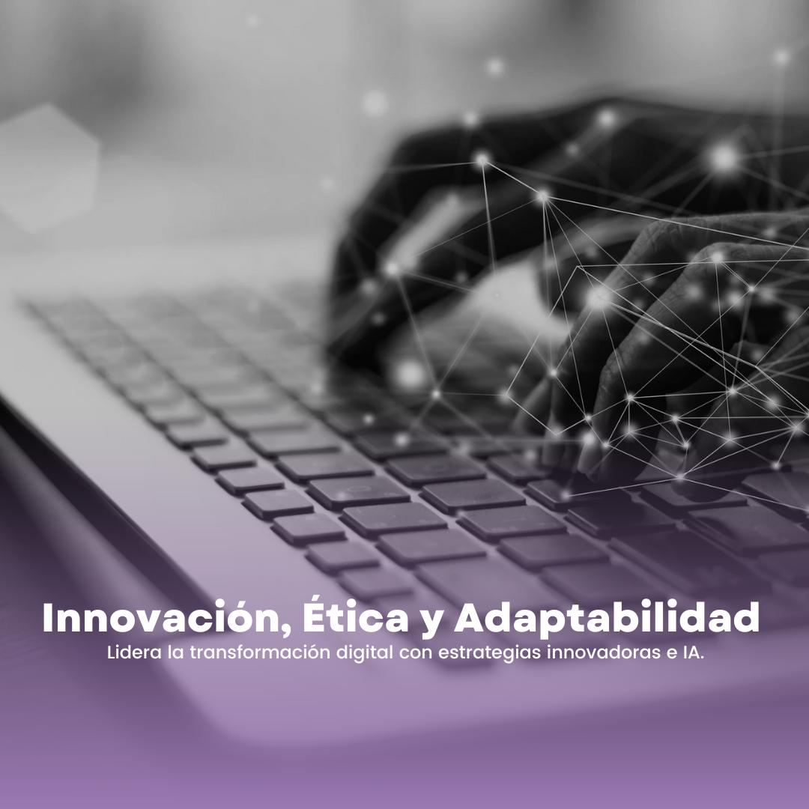

Aplicar IA sin perder el criterio humano
Un marco práctico para decidir dónde automatizar y dónde conservar supervisión.
Leer artículo ↗Más de dos décadas conectando decisiones de negocio, equipos y soluciones tecnológicas de forma clara, ética y práctica.

Digital Salvatore nace para traducir tecnologías complejas en decisiones comprensibles. El enfoque combina experiencia en infraestructura, software, gestión de proyectos y liderazgo de equipos.
Acompañamiento para fortalecer toma de decisiones, comunicación y adaptación tecnológica.
Conocer más ↗Sesiones prácticas para entender herramientas, tendencias y aplicaciones reales.
Conocer más ↗Diagnóstico y diseño de soluciones para procesos, equipos y proyectos digitales.
Conocer más ↗La tecnología cambia rápido. Los principios para aplicarla bien no deberían cambiar con cada tendencia.
Comprensión integral de sistemas, configuración, software y operación tecnológica.
Participación en iniciativas de integración web, gestión y comunicación entre equipos.
Experiencia técnica combinada con metodologías ágiles y coordinación ejecutiva.
Mentoría, capacitación y consultoría para organizaciones y profesionales.
Un marco práctico para decidir dónde automatizar y dónde conservar supervisión.
Leer artículo ↗Cómo evitar que la conversación técnica se desconecte de los objetivos del negocio.
Leer artículo ↗Prioridades, adopción y medición para transformar con sentido.
Leer artículo ↗Conversemos sobre el contexto, los obstáculos y la ruta más útil para avanzar.